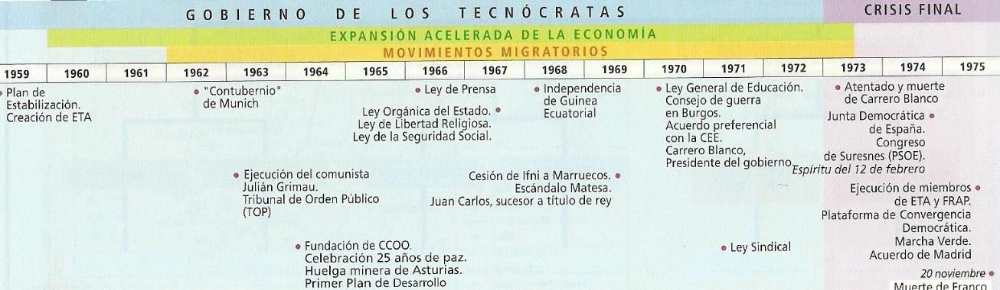
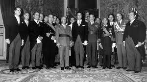
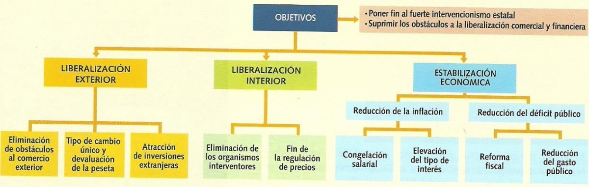
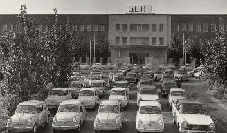
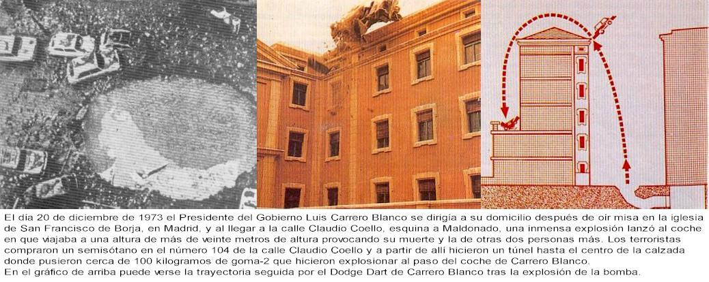

Tema 2: El Desarrollismo Tecnócrata y la Crisis del Franquismo (1959 - 1975)
La definitiva apertura de la dictadura a los mercados capitalistas, el rápido proceso de industrialización y éxodo rural, las contradicciones de una sociedad de consumo desprovista de libertades y el desmoronamiento final del régimen.

Eje temporal que delimita la era tecnócrata desarrollista, la reorganización de la retaguardia de la oposición y el derrumbe institucional del tardofranquismo1. El Giro Tecnócrata y el Plan de Estabilización de 1959
A finales de la década de los cincuenta, las posibilidades del aislamiento y el control autárquico de la economía nacional se hallaban agotadas por completo. Con las reservas de divisas del Banco de España bajo mínimos, una inflación descontrolada y al borde de la suspensión internacional de pagos, Franco se vio obligado a realizar una profunda remodelación gubernamental en 1957.

El dictador Francisco Franco despachando con los tecnócratas del Opus Dei, encargados de sanear las finanzas del EstadoLa dirección económica de la dictadura fue entregada a una nueva generación de políticos, los llamados tecnócratas, muchos de ellos pertenecientes al Opus Dei (como Mariano Navarro Rubio en Hacienda, Alberto Ullastres en Comercio y Laureano López Rodó en la Secretaría General de Presidencia). Su perfil era más técnico y pragmático que ideológico, y propugnaban de forma prioritaria la liberalización económica para garantizar la supervivencia del propio régimen.
La pieza jurídica fundamental de esta reforma fue el histórico Plan de Estabilización Nacional (1959). Su finalidad fue acabar con la autarquía y reinsertar la economía española en los mercados internacionales capitalistas por medio de tres grandes ejes:
- Estabilización económica interior: Recortes drásticos del gasto público para reducir el déficit del Estado, elevación de tipos de interés y congelación temporal de los salarios reales.
- Liberalización comercial interior: Abolición de los rígidos reglamentos estatales y fin del control de los precios fijos de consumo de posguerra.
- Liberalización exterior de la economía: Eliminación de las trabas arancelarias a las importaciones, fomento de la entrada masiva de capitales de inversión extranjeros y una devaluación de la peseta de casi el 50% (fijándose una tasa de cambio única de 60 pesetas por dólar) para incentivar las exportaciones.

Cuadro didáctico de síntesis que resume el saneamiento económico y los procesos de liberalización comercial interior y exterior del Plan de 1959La dictadura superó el estrangulamiento gracias a créditos de rescate del Fondo Monetario Internacional (FMI) y la OCDE, abriendo paso al denominado Milagro Económico Español de los años sesenta, sustentado en tres fundamentales motores de divisas extranjeras:
- El auge del turismo de masas: Millones de turistas europeos invadieron las costas atraídos por los bajos precios y el clima, inyectando ingentes cantidades de divisas.
- Las remesas de los emigrantes: El envío masivo de dinero de cientos de miles de trabajadores españoles emigrados de forma forzosa a Francia, Suiza y Alemania Occidental.
- La inversión industrial extranjera: Atraída por los ínfimos salarios obreros y la férrea disciplina patronal garantizada por la dictadura.
2. Los Planes de Desarrollo y la Gran Transformación Demográfica
Bajo la dirección del ministro del Plan de Desarrollo, Laureano López Rodó, se implantaron tres Planes de Desarrollo Económico y Social (1964-1975) de vigencia cuatrienal. Consistieron en una planificación indicativa estatal para subvencionar, dar ventajas fiscales o rebajas tributarias a las empresas privadas seleccionadas y promover el establecimiento de polos de desarrollo industrial en provincias atrasadas (como Zaragoza, Burgos, Valladolid, Huelva, Sevilla o Granada) para reducir las desigualdades regionales.
Aunque la planificación fue ineficaz y muchos recursos se dilapidaron por corruptelas burocráticas, España experimentó un intenso crecimiento industrial superior al 10% anual, diversificando la siderurgia, la petroquímica y la industria metalúrgica de bienes de consumo.

La cadena de montaje de la factoría SEAT, cuyo modelo Seat 600 se convirtió en el icono indiscutible del nacimiento de la nueva clase media de consumoEste vertiginoso desarrollismo reconfiguró de forma irreversible el mapa sociodemográfico del país, provocando un colosal éxodo rural: más de 2,5 millones de campesinos abandonaron la miseria agraria de Andalucía, Extremadura y el interior peninsular para convertirse en proletariado urbano en los ensanches industriales de Barcelona, el País Vasco y Madrid. Este despoblamiento dio origen a la llamada España vaciada y propició un crecimiento urbanístico caótico y superpoblado en las periferias de las grandes urbes (aparición de las ciudades dormitorio).
Simultáneamente, coincidiendo con el estallido de natalidad del baby boom (que elevó la población a 34 millones en 1970), se consolidó la sociedad de consumo, generalizándose en los hogares de clase media urbana la adquisición del frigorífico, el televisor y el utilitario Seat 600.
3. Apertura Limitada y el Escándalo Matesa (1969)
Ante las transformaciones sociológicas del país, la dictadura intentó una cautelosa apertura institucional para lavar su imagen totalitaria sin alterar en absoluto el inmovilismo político. El ministro de Información y Turismo, Manuel Fraga Iribarne, promovió la Ley de Prensa de 1966 (conocida como la Ley Fraga), que suprimía la censura previa gubernativa, aunque mantenía la potestad judicial de multar de forma severa y decretar el secuestro de publicaciones críticas.
Se promulgó también la Ley Orgánica del Estado (1967), aprobada en un plebiscito controlado, que regulaba la representatividad de la democracia orgánica basada en los tres "cauces naturales" (familia, municipio y sindicato), separaba la presidencia del Gobierno de la Jefatura del Estado y culminaba en julio de 1969 con la designación del príncipe Juan Carlos de Borbón como sucesor de Franco a título de rey.
 La célebre caricatura de Manuel Fraga en la prensa satírica de la época, reflejando el clima de tímida libertad de prensa de finales de los sesenta
La célebre caricatura de Manuel Fraga en la prensa satírica de la época, reflejando el clima de tímida libertad de prensa de finales de los sesenta
Sin embargo, las tensiones de poder entre las diferentes familias franquistas estallaron de forma estrepitosa con el Escándalo Matesa (1969). La empresa de maquinaria textil Matesa de Juan Vilá Reyes, apoyada de forma preferente con subvenciones de los ministerios tecnócratas por su labor exportadora, fue objeto de una investigación policial que destapó una escandalosa trama de exportaciones ficticias y malversación de créditos públicos por más de 9.000 millones de pesetas.
El ala falangista de la dictadura (el sector azul) aprovechó el escándalo para emprender una demoledora campaña de prensa y exigir la dimisión de los ministros tecnócratas del Opus Dei. Franco zanjó la pugna con un expeditivo cambio de Gobierno en octubre de 1969, destituyendo a Fraga y al falangista Solís, y formando un Gobierno monocolor dominado de forma absoluta por los tecnócratas leales a Luis Carrero Blanco.
4. El Despertar de la Oposición Social y el Contubernio de Múnich
La modernización del país contrastó con la parálisis autoritaria, desatando una creciente contestación social y el renacimiento clandestino de la oposición política:
- El movimiento obrero clandestino: El rechazo al Sindicato Vertical oficial se canalizó a partir de las elecciones de 1966 por las Comisiones Obreras (CCOO) de Marcelino Camacho y del Partido Comunista de España (PCE), organizando asambleas de fábrica, boicots y huelgas ilegales reprimidas con dureza por la Brigada Político-Social.
- El Contubernio de Múnich (1962): Un hito en la unificación opositora. Un grupo de 118 delegados españoles de la oposición moderada interior (monárquicos, democristianos y liberales) y del exilio republicano y socialista se reunió en el IV Congreso del Movimiento Europeo en Múnich para firmar una resolución conjunta exigiendo libertades democráticas antes de admitir a España en la CEE. La dictadura los tachó de traidores y desterró a los participantes.
- La reorganización del socialismo: El histórico PSOE, debilitado en el interior, sufrió una renovación generacional en su Congreso de Suresnes (Francia, 1974) eligiendo como secretario general al joven abogado sevillano Felipe González.
- El rebrote de los nacionalismos y el terrorismo de ETA: En Cataluña nació el partido moderado Convergencia Democrática de Cataluña de Jordi Pujol. En el País Vasco, una escisión de las juventudes del PNV fundó en 1959 la banda armada ETA (Euskadi ta Askatasuna), que inició en 1968 una campaña sistemática de atentados terroristas que provocó una extrema respuesta represiva del Estado en el Proceso de Burgos (1970).
5. El Colapso del Tardofraquismo: Del Magnicidio a la Marcha Verde
La fase final del franquismo estuvo marcada por la crisis económica internacional de 1973 (el encarecimiento del petróleo que detuvo el milagro desarrollista), la senilidad del dictador y el enfrentamiento armado entre aperturistas e inmovilistas (el búnker).

El cráter y el vehículo oficial destrozado en el patio del edificio de los Jesuitas tras el magnicidio de Claudio Coello el 20 de diciembre de 1973El golpe de gracia a la continuidad de la dictadura se produjo el 20 de diciembre de 1973, cuando un comando de ETA ejecutó la Operación Ogro, haciendo estallar una potente bomba subterránea de dinamita en la calle madrileña de Claudio Coello al paso del vehículo del recién nombrado presidente del Gobierno, el almirante Luis Carrero Blanco. El magnicidio destruyó el cerebro militar destinado a heredar la dictadura y asegurar el franquismo sin Franco.
El nuevo Gobierno presidido por Carlos Arias Navarro anunció un tímido aperturismo (el espíritu del 12 de febrero), rápidamente asfixiado por el inmovilismo del búnker. Ante el incremento de atentados de ETA y del FRAP, el régimen decretó el estado de excepción permanente y firmó las ejecuciones a muerte de cinco militantes en septiembre de 1975, desatando una unánime ola de condena internacional, la quema de embajadas españolas y la retirada en cadena de embajadores europeos.
La debilidad extrema de la dictadura fue aprovechada por el rey Hassan II de Marruecos para forzar la entrega del Sáhara Español organizando la Marcha Verde (noviembre de 1975), una invasión civil pacífica de más de 350.000 marroquíes armados con el Corán. Arias Navarro claudicó firmando los Acuerdos de Madrid (14 de noviembre de 1975), entregando la administración del Sáhara a Marruecos y Mauritania y traicionando la promesa de referéndum contraída con el pueblo saharaui.
Finalmente, tras una penosa agonía clínica, Francisco Franco falleció el 20 de noviembre de 1975 a los 83 años de edad. En cumplimiento de la ley de sucesión, Juan Carlos I de Borbón fue proclamado Rey, abriéndose de forma imprevista para el búnker el camino hacia la Transición democrática.
¿Deseas profundizar en las maniobras militares de la Marcha Verde y el pánico del gobierno de Madrid ante el Sáhara en 1975?
6. El Desarrollismo en Canarias: Boom Turístico y Sindicatos Clandestinos
La segunda etapa de la dictadura franquista (1959-1975) provocó en el archipiélago una profunda transformación socioeconómica, caracterizada por la alteración del paisaje litoral, el despegue terciario y la articulación de la oposición política e independentista:
- El Régimen Económico y Fiscal (REF): Tras las peticiones de la burguesía insular, el Gobierno aprobó en 1972 la Ley del Régimen Económico y Fiscal de Canarias (REF), actualizando el marco de franquicias e incentivos para reactivar el comercio, la actividad portuaria e impulsar la importación de bienes de equipo.
- El Boom Turístico de Masas: El sector servicios y la construcción experimentaron un crecimiento colosal. Se urbanizaron áreas costeras del litoral canario —como el sur de Gran Canaria (Playa del Inglés y Maspalomas), el sur de Tenerife, o el Puerto de la Cruz con el complejo del Lago Martiánez diseñado por César Manrique—, atrayendo a millones de visitantes europeos y transformando la estructura productiva de las islas.
- El Despertar Obrero y los Sucesos de Sardina (1966): Durante la década de 1960, la organización clandestina Comisiones Obreras (CCOO) —vinculada al PCE y a sectores del cristianismo de base— canalizó la protesta obrera, destacando la huelga de los aparceros del tomate y el violento choque con las fuerzas de orden en los Sucesos de Sardina del Norte en Gran Canaria (1966).
- El Independentismo Canario: Surgió la organización clandestina Canarias Libre (1959), impulsada por Fernando Sagaseta. En 1964, el abogado Antonio Cubillo fundó desde el exilio en Argelia el MPAIAC (Movimiento por la Autodeterminación e Independencia del Archipiélago Canario), emitiendo propaganda a través de la emisora La Voz de Canarias Libre e izando la bandera tricolor con las siete estrellas verdes.
- La Descolonización del Sáhara (1975): El abandono del Sáhara Occidental tras la Marcha Verde provocó la repatriación desordenada de miles de familias canarias residentes en el territorio africano y paralizó la actividad de la flota pesquera canaria que faenaba en el banco canario-sahariano.